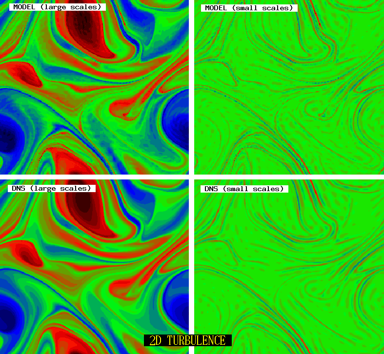
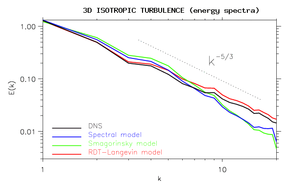

Turbulence model
In classical turbulence theory, the closure problem arises when considering the statistical or filter average of the forced Navier-Stokes equations: the action of the unresolved scales appear via the Reynolds stresses, which need to be prescribed in order to close the system. Most turbulence models try to close the system by prescribing directly the shape of the Reynolds stresses using, e.g. dimensionnal arguments and arbitrary parameters which need to be calibrated. One class of these models are eddy viscosity models. We have used a novel approach, in which the Reynolds stresses are computed by an estimate of the r.m.s. or subgrid velocities. The estimate is done via a dynamical equation linking the average or resolved velocity and the r.m.s. or subgrid velocities. this equation is derived from the Navier Stokes equations via two approximations. i) the non-linear interactions of the small scale scales between themselves is modeled via a turbulent viscosity. ii) only the non-local interactions between the small scales and the mean large scale flow are exactly taken into account in the equation of small scales. It is thus refered to as a "non-local model" of turbulence. It is in fact a generalization of the Rapid Distorsion Theory (RDT).This new model allows both analytical predictions and numerical implementation.
|  |
The model was developed and implemented in a numerical code for 2D isotropic turbulence (see PhD thesis) using a Lagrangian algotithm for the integration of the approximated small scales equation. The model can be used without turbulent viscosity as the non-linear interactions of the small scale scales between themselves are small compare to non-local interactions.
|
|
The model was adapted for 3D turbulence by replacing the equation for small scale velocity by an equation for the pseudo Lamb vector corresponding to the non-local part of the Reynolds Stress. The local interaction between subgrid scales were modeled by a turbulent viscosity. The resulting RDT-Langevin model was tested for 3D isotropic turbulence (see Laval et al (2006), Eur. Phys. J. ) is currently beeing implemented in a numerical code for 3D wall bounded flows.
|  |
References